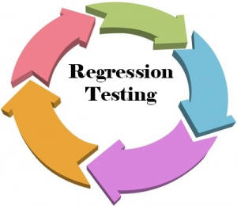
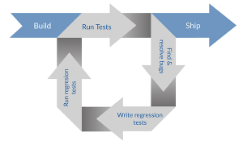

What is Regression Testing? Techniques and best practices
May 3, 2017If you’ve been following this blog, you know that we are pretty serious about regression testing best practices. Visual regressions were the arch-enemies of our product AjaxSwing. To overcome them, we’ve even created our own automated regression testing tool.
Today, we’d like to talk about this type of testing. We’ll cover its key concepts and challenges. Besides, we’ll explore regression testing best practices, techniques and tools. Let’s start with addressing some of the basics.
What is regression testing?

Image credit: 360logica
Basically, we’re talking about a testing methodology/process that tells you if a previously written and tested code broke after you’ve added an update or a fix.
In other words, it helps you notice if you’ve unknowingly introduced bugs to your software while adding new code. New bugs of this kind are called regressions.
How to do regression testing?

Image credit: DZone
Okay, so how exactly do you test for regressions? In a nutshell, you perform regression testing by re-executing the same tests after each update. Passing tests ensure that your code continues to function as expected. Once a test that passed during previous runs fires a failure, you know that you’re dealing with a regression.
As a rule, it’s a good practice to run tests before the release of every new version of your product. A typical routine incorporates the following stages:
- selecting which portions of the system to retest
- execution of test cases (manually or automated).
Here’s another essential thing to note. In theory, regression testing applies to any testing level, including unit, API/integration, system and acceptance testing. There is a widespread convention, though, that regression testing is mostly a part of system testing.
Extent of your tests
The extent of a regression test can cover the complete functionality of your software or focus on separate aspects.
Aside from functionality, tests of this type can deal with non-functional aspects of your project. Specifically, visual regression testing of a user interface often tackles presentation issues. Most people would characterize the latter as aesthetic.
Regression testing techniques
It’s often impractical to cover every aspect of your application with regression tests. Due to this fact, several regression testing techniques exist.
Full Testing (Retest All)
This regression testing technique strives to achieve a complete coverage of all possible issues during every test run. This approach boils down to running all tests after every modification introduced to the project.
While it takes more time and effort, the retest-all technique is optimal when regressions are hard to predict and localize. Need an example? How about CSS regressions where one visual bug affects multiple pages and UI states.
In some instances, there is no way to predict which parts of the system a change will affect. In such cases, only full regression testing can guarantee that the system will perform well.
Regression Test Selection
The Retest All regression testing technique is reliable, yet time-consuming and costly. That’s why it’s often wiser to organize your tests into suites that correspond to modules of your program. During each testing session, your QAs will retest only the modules that are likely to be affected by the change.
In the case of regression test selection, each run focuses on the functionality that’s relevant for a particular release. When following this approach, it’s vital to make sure that it gives you higher ROI than the Retest All technique.
Test Case Prioritization
Prioritizing tests is another way to optimize the testing process. With Test Case Prioritization, your QA team still runs all tests, but it decides on which ones to run first.
There are two widely accepted approaches to Test Case Prioritization:
- General prioritization. Testers select cases based on their relevance to all subsequent versions.
- Version-specific prioritization. In the case of this technique, testers choose cases based on their importance for a specific version or update.
Retest All and Test Case Prioritization involve roughly the same amount of resources. Still, the latter enables you to ship important updates and fixes faster.
Hybrid
This term covers tactics that border on Retest All, Regression Test Selection and Test Case Prioritization. For instance, teams may opt for Regression Test Selection in the case with minor releases yet choose Test Case Prioritization or Retest All for the major ones.
Regression testing best practices
Alright, we’ve found out what regression testing is and how it’s carried out. Let’s proceed to some of the regression testing best practices. Let’s look at a couple of recommendations that can make the life of a QA engineer simpler.
Regression testing best practice #1. Automate
Or, to be more precise, automate everything you can. It’s next to impossible to eliminate the need for manual testing altogether. Nevertheless, you can keep the number of manual tests to a reasonable minimum. In this context, it’s paramount that you develop a strategy for determining which tests to automate and which tests to execute manually.
The most common areas that require automation in 99.99% of cases include:
- Running the same regression tests on different platforms. This includes different operating systems, browsers, and devices.
- Running tests after a bug fix or a minor update.
- Data-driven testing. For instance, testing how your application handles different input data.
Best practice #2. Build customer personas and define your happy paths
Happy paths are clearly defined test cases associated with widespread UX scenarios. The typical examples of these scenarios include signing in or adding items to a shopping card.
In real-life projects, automated tests often revolve around happy paths. Edge cases, in the meantime, become tasks for manual testers. A clear understanding of happy paths stems from the understanding of who your users are. This, in turn, involves creating well-defined customer personas.
Best practice #3. Keep your regression test suites up to date
It’s inevitable that at some point, you’ll need to revise your test suites. As your project grows, some of the added functionality will start lacking sufficient test coverage. Some of the tests may become obsolete or unnecessary. For these reasons, your QA team will need to occasionally revise your regression test suites.
Best practice #4. Remember about ROI
Return of investment determines every process in a real-life project. When it comes to testing, ROI is a metric that goes well beyond the choice between manual and automated QA.
You need to know about all expenses associated with a particular automation tool. Also, how much time and how many specialists will you need to run testing suite? Asking yourself questions of this sort will help you build an efficient and cost-effective testing strategy.
Best practice #5. Use a diversified automation toolkit
There is no one-size-fits-all approach to automation that covers all levels of the pyramid. You can cover unit and API-level tests with Selenium-like frameworks, but you will need a different solution for functional and UI testing. Specifically, a record-playback platform will address the low maintainability of UI tests by allowing QAs to quickly edit test suites.
Best practice #6. Automate visual regression testing
Manual verification of the UI has its advantages, but at the end of the day, it’s too slow and ineffective. Besides, humans are innately bad at spotting minor visual differences. Knowing this, it makes more sense to automate visual regression testing with a screenshot comparison module or a dedicated tool.
Regression testing tools and software
We’ve covered several tools in our earlier posts on Selenium competitors and Selenium IDE alternatives. Still, it might prove handy to have a quick look at the most popular options:
- Code-based software testing frameworks. Selenium seems like the undisputable leader in this department. Still, there are other tools that outperform Selenium in the way of functionality, ROI, and other criteria.
- JavaScript-based scripting frameworks like Mocha or Karma. Like Selenium, these tools rely on the WebDriver API, and they enable testers to hand-code automated tests. Unlike Selenium, these tools provide a higher level of abstraction, which makes them easier (and more fun) to work with.
- BDD testing frameworks like Cucumber. Tools of this type use plain language parsers that enable QA engineers to write tests in a language that feels almost like human English.
- Enterprise record-playback IDEs. This category includes UFT, Progress Test Studio (Telerik), and similar solutions. Instead of (or in addition to) relying on hand-coded tests, IDEs record sequences of interactions with the software that’s being tested. They rerun these recorded interactions and use image comparison to detect regressions.
- Codeless cloud-based platforms. Platforms like Screenster or Usetrace are lightweight and simple alternatives to enterprise IDEs. While using the same record-playback principle, cloud-based platforms offer advanced functionality. This functionality includes DOM comparison, automatic handling of timeouts and dynamic regions, collaboration functionality, etc.
Challenges of regression testing
Image credit: Guru99
Every process or method has its pitfalls, and software testing is no exception. The advent of Agile has brought new challenges that testers have to overcome:
- Minimal documentation with changing project scope and frequent iterations. The pace at which Agile projects move leaves little time for both manual testing and hand-coded tests. As a consequence, it is becoming increasingly more challenging to ensure efficient test coverage of a project.
- Choice of a testing tool and methodology. Manual regression testing is faster to set up in the short term, yet massively inefficient in the long run. Hand-coded tests, on the other hand, take more time to develop and are harder to maintain. With the right IDE, test automation takes less time and effort, yet IDEs are hardly compatible with TDD and the test-first approach.
- UI testing. The increasing focus on the UI/UX aspect of a software product makes UI testing more important than ever. Sadly, traditional code-based tools fail to provide a comprehensive test coverage of a UI.
Bottom line: what the future holds for us
Image credit: TestFort
One of the key factors influencing regression testing is the ever-increasing speed of production in software development. In the brave new world of today, out-delivering your competition is the key challenge. You need to do more with less time. And you need to make the best use of your resources.
So what does this mean for testers?
First, it takes a smarter strategy to ensure that the code you’ve written and previously tested performs well after a new update. It takes adherence to follow best practices. Besides, this implies being on the constant lookout for new tools and solutions.
As codeless IDEs and cloud-based platforms improve, their role in professional testing grows more prominent. When compared to code-based solutions, cloud-based IDEs offer significant advantages in terms of learning curve, test maintenance, collaboration functionality, and the ROI of regression testing.
But does this mean that a codeless IDE is optimal for every project? More specifically, will they work for the project you’re working on? The only way to find out is to try it for yourself. Check out the free online demo of Screenster below and tell us what you think.
33 thoughts on “What is Regression Testing? Techniques and best practices”